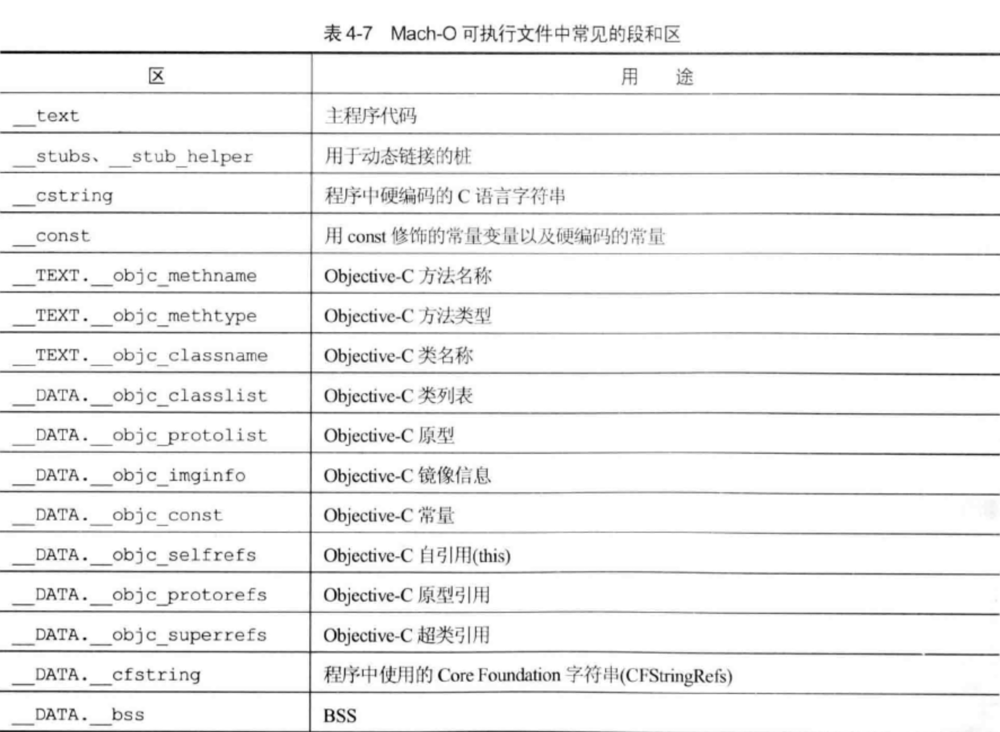
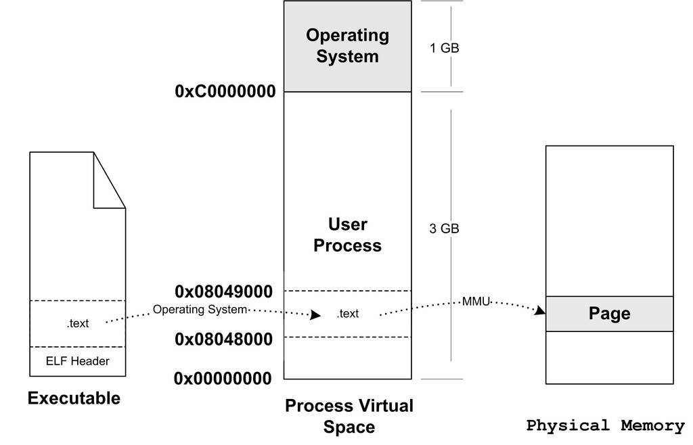
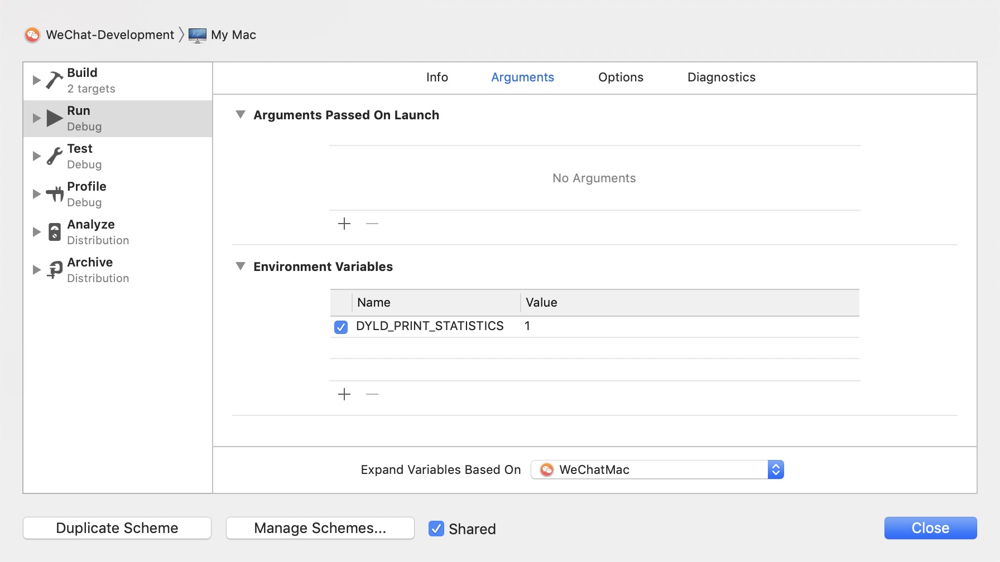
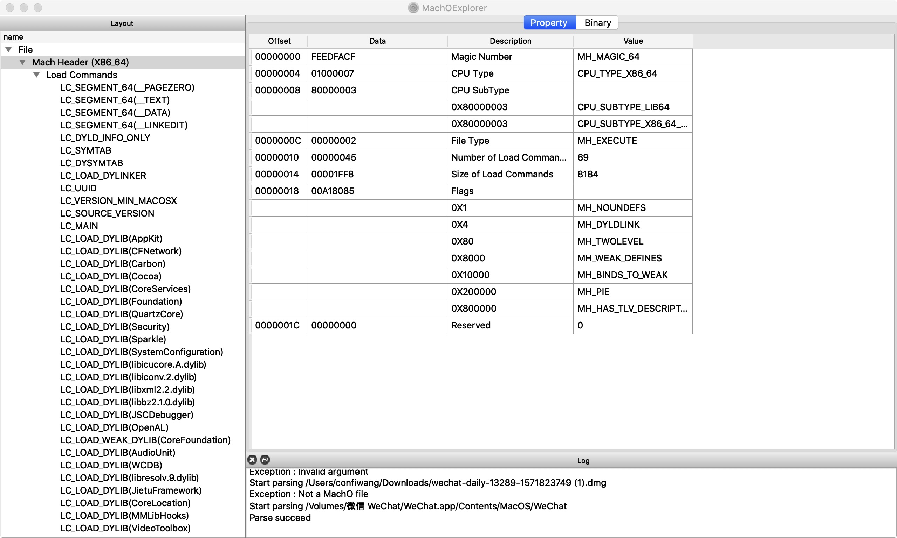
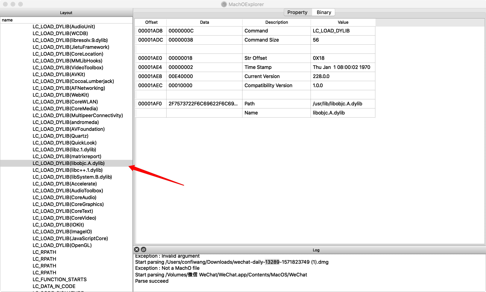
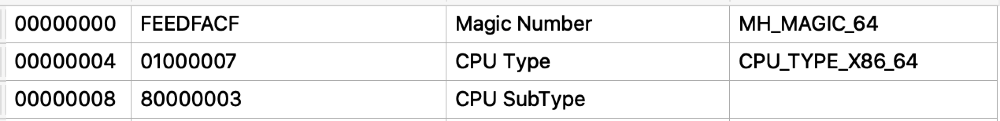
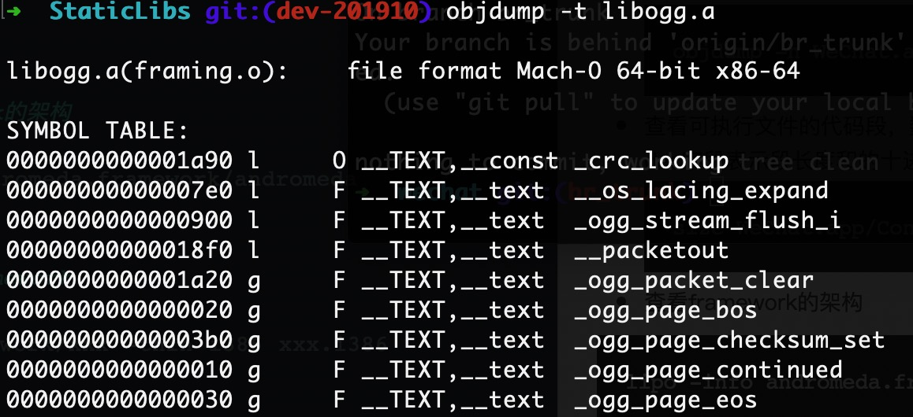

Mach-O文件
运行时可执行文件的文件类型
- 包含以下几种类型
- Executable—Main binary for application
- Dylib—Dynamic library (aka DSO or DLL)
- Bundle—Dylib that cannot be linked, only dlopen(), e.g. plug-ins
- Image—An executable, dylib, or bundle
- ramework—Dylib with directory for resources and headers
- 常见的段跟区

APP加载过程
从exec()到main()
exec()
内核将你的APP映射到一个随机的地址（ASLR）
加载Dyld
内核将加载可执行文件任务交给dyld，Dyld 是一个辅助程序，从程序的entry point开始加载
- 主要功能
- 加载所有依赖库；
- 修复所有DATA页面的指针；
- 运行所有构造器初始化，并最终调用 mian()。
加载可执行文件
进程虚拟地址空间
任何问题都可以通过增加一个中间层来解决
虚拟地址空间由一组页映射函数将虚拟空间的各个页映射至相应的物理空间，那么创建一个虚拟空间实际上并不是创建空间而是创建映射函数所需要的相应的数据结构，最初创建的时候并没有映射任何物理空间，在i386的Linux下，创建进程虚拟地址空间实际只是分配一个页目录，映射关系等到后面程序发生页错误的时候再进行设置。
装载过程
物理空间-虚拟空间-可执行文件间的映射关系
当程序发生页错误时，操作系统将从物理内存中分配一个物理页，然后将该页“缺页”从磁盘中读取到内存中，再设置缺页的虚拟页和物理页的映射关系，这样程序才得以正常运行。但是很明显的一点是，当操作系统捕获到缺页错误时，它应当知道程序当前所需要的的页在可执行文件中的哪一个位置。这就是虚拟空间与可执行文件之间的映射关系。
VMA（Virtual Memory Area）
Linux中将进程虚拟空间中的一个段叫做虚拟内存区域，VMA是进程的数据结构，用于保存虚拟空间与可执行文件的映射关系，以及页的属性等。当发生页错误时，操作系统通过VMA计算出“缺页”在可执行文件中的偏移。执行过程
操作系统通过设置CPU的指令寄存器将控制权转交给进程，由此进程开始执行。这一步在操作系统层面上比较复杂，它涉及内核堆栈和用户堆栈的切换、CPU运行权限的切换。从进程的角度看可以简单地认为操作系统执行了一条跳转指令，直接跳转到可执行文件的入口地址。页错误处理
当CPU开始打算执行一个地址指令时，发现页面0x08048000~0x08049000是空页面，于是它认为这是一个页错误。CPU将控制权交给操作系统，操作系统将查询第二步建立的数据结构（虚拟空间与可执行文件的映射关系），然后找到VMA，计算出相应的页面在可执行文件中的偏移，然后在物理内存中分配一个物理页面，将进程中该虚拟页与分配的物理页之间建立映射关系，然后把控制权交回给进程，进程从刚才错误页位置重新开始执行。EFL装载执行过程
- 创建一个独立的虚拟地址空间
- 读取可执行文件头，并且建立虚拟空间与可执行文件的映射关系
- 将CPU的指令寄存器设置成可执行文件的入口地址，启动运行
可执行文件，进程虚拟地址空间，物理空间三者之间的关系

程序入口地址0x08048000可执行文件内容
可执行文件中包含的往往不止代码段，还有数据段，BSS（未初始化的变量，不占用内存空间）等，所以映射到进程虚拟空间的往往不止一个段。段的整合
ELF文件被映射时，是以系统的页长度作为单位的，每个段在映射时的长度是系统页的整数倍，，如果不是，那么多余的部分也将占用一个页。一个ELF文件中往往有十几个段，那么内存空间的浪费是可想而知的。
当我们站在操作系统的角度看问题时，可以发现实际上它并不关心可执行文件各个段所包含的内容，操作系统只关心一些跟装载相关的问题，最主要的是段的权限（可读，可写，可执行）。ELF文件中，段的权限往往只有为数不错的几种组合，基本上是三种：以代码段为代表的权限为可读可执行的段。
以数据段和BSS段位代表的权限为可读可写的段。
以只读数据段为代表的权限为只读的段。
那么，我们可以找到的一个简单的方法：对于相同权限的段，把他们合并到一起当做一个段进行映射。
Segment
一个Segment包含一个或多个属性类似的Section，装载时可以将他们看成一个整体一起映射，也就是说映射以后在进程虚拟空间中只有一个相对于的VMA，这样做的好处是可以明显减少内存碎片。
Segment实际上从装载的角度重新划分了ELF的各个段。Code Sign
- 每一页都被单独加密
- 每一页在读取的时候都单独校验
Dyld加载其他动态库
加载所有的依赖库文件
Dyld从主执行文件的header获取到需要加载的所依赖动态库列表，然后它需要找到每个 dylib，而应用所依赖的 dylib 文件可能会再依赖其他 dylib，所以所需要加载的是动态库列表一个递归依赖的集合
Rebase
在Image内部调整指针的指向。
在过去，会把动态库加载到指定地址，所有指针和数据对于代码都是对的，而现在地址空间布局是随机化，ASLR(Address space layout randomization)使所有动态库被加载到随机地址上，所以需要在原来的地址根据随机的偏移量做一下修正
Bind
调整指向Image外部的dylib内容的指针。
这些指向外部的指针被符号(symbol)名称绑定，dyld需要去符号表里查找，找到symbol对应的实现
Notify ObjC Runtime
动态语言额外操作
- 注册Objc类 (class registration)，ObjC 需要维护一张包含所有类与其映射的表格。
- 把category的定义插入方法列表 (category registration)
- 保证每一个selector唯一 (selector uniquing)
Initializers
类初始化
- Objc的+load()函数
- C++的构造函数属性函数
- 非基本类型的C++静态全局变量的创建(通常是类或结构体)
mian()
应用程序入口
应用
APP启动时间
main()函数执行前的耗时优化
- 只需要在Edit scheme->Run->Environment Variables中将环境变量DYLD_PRINT_STATISTICS设为1，就可以看到main之前各个阶段的时间消耗
 - 相关优化点：
- 动态库加载越多，启动越慢。
- ObjC类，方法越多，启动越慢。
- ObjC的+load越多，启动越慢。
- C的constructor函数越多，启动越慢。
- C++静态对象越多，启动越慢。
- 建议使用swift
- dlopen()不建议使用
- 线上启动时间起点获取
以App的进程创建时间（即exec函数执行时间）作为冷启动的起始时间。因为系统允许我们通过sysctl函数获得进程的有关信息，其中就包括进程创建的时间戳。
代码瘦身
因为OC是动态原因，编译的时候并不会主动删除没有被使用的类。
删除无用的类
通过对Mach-O文件的了解，可以知道TEXT:objc_methname:中包含了代码中的所有方法，而DATAobjc_selrefs中则包含了所有被使用的方法的引用，通过取两个集合的差集就可以得到所有未被使用的方法删除无用的方法
分析Mach-o文件中的__DATA __objc_selrefs段得到使用到的方法，通过otool找出实现的所有方法。取差集得到未使用的方法。然后过滤setter和getter，过滤协议方法，再加上一些其它的过滤规则得到最终的结果。
查看Mach—O文件相关信息
查看Mach-O文件依赖的库文件
xcrun dyldinfo -dylibs filename使用MachOExplorer查看Mach-O文件的header结构
可执行文件中加载的lib
包含了objc的runtime（可以通过编写测试程序得知，下图分析的是微信的可执行文件，添加的动态链接库稍多）
查看架构是32位的还是64位的
查看可执行文件各个段的信息
参数-x展示详细信息1
objdump -h WeChat.app/Contents/MacOS/WeChat
查看可执行文件的代码段，数据段，BSS段的长度
dec字段表示段长度和的十进制 ，hex表示长度和的十六进制1
size WeChat.app/Contents/MacOS/WeChat
查看framework的架构
1
lipo -info andromeda.framework/andromeda
按架构拆分framework
1
lipo xxx.framework/xxx -thin i386 xxx.i386
根据方法名查找对应的目标文件
1
objdump -t libogg.a //需要有对应的符号表

引用
Optimizing App Startup Time
美团外卖iOS App冷启动治理
iOS代码瘦身实践:删除无用的类
iOS代码瘦身实践:删除无用的方法